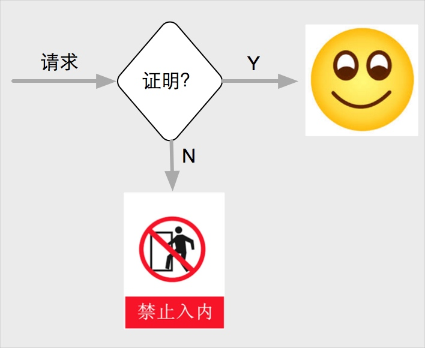
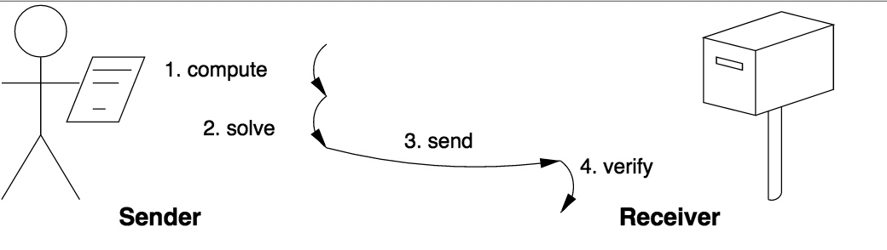
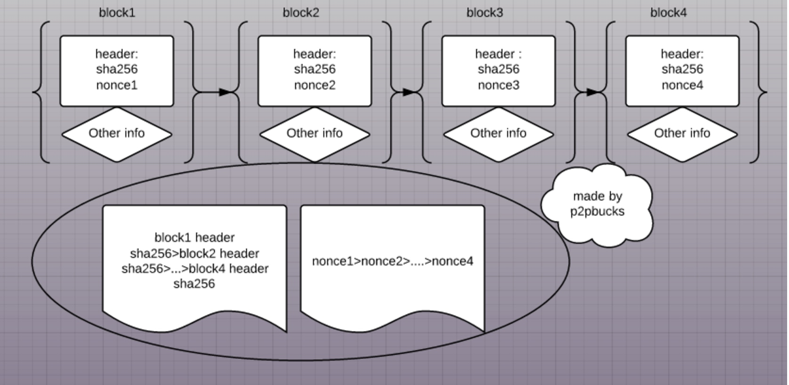
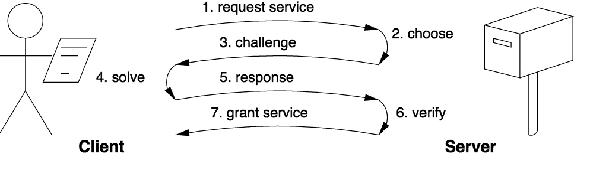
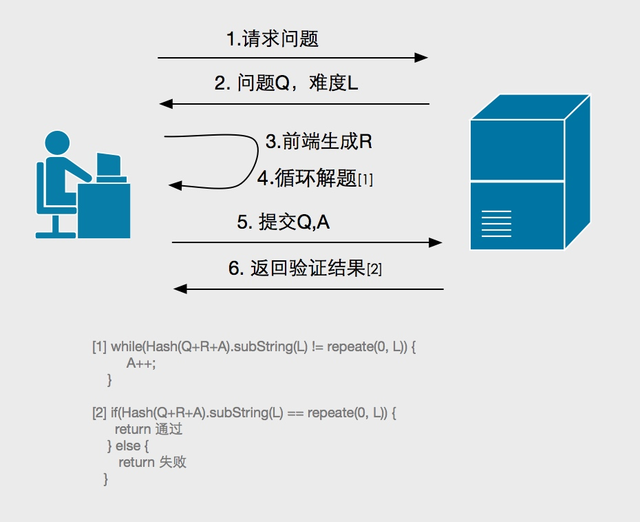

0x00 前言
在我们的上一篇文章《可信前端之路-代码保护》 中，我们提到了希望打造一个web可信系统（Trusted system），通过代码保护来提高前端环境的安全性，今天，我们从另一个完全不同的角度继续探讨如何打造可信前端之路。
0x01 背景
安全防护的核心就是保护数据。一个web系统，本质就是数据输入输出的过程，输出端安全也就是后端安全重要
性不言而喻，也有了很多较为成熟的防御方案，能够保障输出端处在安全可靠的环境中。但是输入端也就是前端环境的安全性一直无法得到有效的保障，长期处于『永远不要相信前端的输入』状态。
在数据时代，每一个真实用户的数据都是企业的重要资产。垃圾注册、刷单、撞库、薅羊毛、恶意广告点击等行为更是会给企业带来直接的经济损失，在这些场景下，保护输入端数据可信的重要性日渐彰显。然而由于前端环境的特殊性，js源码和http请求都将服务端所需数据暴露在外，破坏者可以轻易的用机器批量伪造大量恶意请求，混入真实用户请求之中，真假难辨。因此，前端输入的不可信和企业对真实用户数据的强烈需求形成了很大的矛盾。
如何从万千请求中筛选出恶意请求呢？我们先看下恶意请求和正常用户的区别：
- 机器生成
- 无正常用户行为
常见的防御措施也是围绕着这两点展开的：
- 验证码
防御措施应用最广泛的就是图形验证码，让机器过图灵测试。然而验证码对抗发展到今天，无论是 ocr还是打码平台（参见《黑产揭秘：“打码平台”那点事儿》）,都已经可以容易地突破一般的图形验证码。 - 用户行为和数据分析
用户行为和数据分析是一个行之有效的解决方案，但是不在本文的讨论范围，可以参考阿里的反欺诈服务。
其实恶意请求对比正常用户，还有一个很明显的特点，就是时间。
正常用户从打开网页，到输入数据提交是需要一定时间的，但是恶意请求不会，它是由机器批量生成数据，因而可以在短时间内发送大量的请求。对于一个正常用户而言，必然会在我们的页面上待上一定的时间，但是对于一个攻击者而言，要求他在我们的页面上待一定的时间，对于他来说，攻击成本就大大提高了。
我们今天要谈的pow就可以在一定程度上”要求”每一个请求者在页面上待上几秒。
0x02 pow是什么
pow（Proof-of-work，工作量证明）是一个经济学名词，它是指系统为达到某一目标而设置的度量方法。在1999年，Markus Jakobsson and Ari Juels两人将pow概念引入计算机体系，设计系统用以抵挡拒绝服务攻击和网络爬虫，后来在反垃圾邮件中被广泛使用。其设计理念和我们上文中提到的类似，一个正常用户写一封邮件是需要一定的时间，而发送垃圾邮件者是无法接受这个等待的时间，如果pow系统能够使垃圾邮件发送者需要更多的时间来发送邮件，就可以增大他们的成本，起到抵挡攻击的作用。
pow系统中一定有两个角色，工作者和验证者，他们需要具有以下特点：
- 工作者需要完成的工作必须有一定的量，这个量由工作验证者给出。
- 验证者可以迅速的检验工作量是否达标。
- 工作者无法自己”创造工作”，必须由验证者发布工作。
- 工作者无法找到很快完成工作的办法。
在日常生活中，这个流程非常好理解，比如：
- 工人在工地搬砖，包工头下达命令，工人开始劳动，劳动结束后，包工头可以很快的从搬好的砖块数来给工人结算工资，砖块就是证明工人工作量的凭证。
- 学生们进行考试，同学们需要一定时间做题，考试结束后，老师可以很快的判断出题目是否正确，给学生结算成绩，试卷就是证明学生工作量的凭证。
等等。。。

在计算机系统中，验证着就是服务器，工作者就是请求方，在正常的模型中，请求方可能是破坏者发起的，他能在短时间内发送大量的垃圾请求，导致服务器无法工作或者收集到错误的数据等。服务器引入pow认证模型，在请求方请求之前给它出了一道题，请求方必须花费一定的时间来计算出结果然后交给服务器，服务器很快的可以判断出请求方是否计算过题目，如果没有直接拒绝。对于破坏者来说，同时发送大量的垃圾请求意味着需要同时计算大量的题目，消耗了破坏者的计算资源和时间，从而缓解了攻击。计算结果就是请求方工作量的凭证。
0x03 pow实现
Solution-verification
pow最常见的模式为Solution-verification（工作-验证模式），在此模式中，工作者必须自己选择问题和寻找答案，验证者本身也不知道正确答案，在一个正确答案被找到之后，验证者只负责验证答案的合法性。这个模式就类似于生活中考试里面的开放式作文，出题者本身也没有标准答案，只能验证答案是否跑题。如下图所示:
HashCash
HashCash是最典型的Solution-verification实现，HashCash也是目前应用最为广泛的反垃圾邮件的pow系统。在HashCash系统中，发件方向邮箱服务器发送的邮件信息中必须包含一段邮件签名，邮件签名中包含有收件人地址、发件时间和一个数字counter，counter需要使邮件签名满足条件：利用SHA-1散列算法对邮件签名生成一个160-bit长度的哈希值，该哈希值前20位全为0 。
此算法利用了散列算法的不可预测性，SHA-1的碰撞概率决定了算法的安全性。
在目前的认知中，发件方除了穷举尝试，无法很快的找到满足条件的签名串。于是发件方在发送邮件之前的工作就是不断地counter++生成新的邮件签名，然后获取SHA-1哈希值，判断前20位是否全为0，如果不是的话重新生成。
而对于邮件服务器而言，只需要做一次SHA-1判断生成的签名是否满足条件即可，完全符合POW易于验证的定义。理论推导
大家看到这里可能有一些疑问？
1 如何保证发送方一定能够计算出结果？
2 如何保证客户端的运算时间？
3 如何防止签名重放？下面我们来从理论上论证上述问题。
散列函数如SHA-1是基本均匀分布的，对于我们生成的每一个邮件签名来说，对应的的哈希值在每一位上出现0和1的概率应该是相同的，SHA-1生成的160-bit哈希结果，其所有的可能是 2^160 种，而前20位固定为0的情况有 2^140 种，所以每次生成的邮件签名符合条件的概率为：
2^140 / 2^160 = 1/2^20
问题一，解空间必然存在，解空间的大小为2^140。
问题二，每一次生成邮件签名命中的概率为 1/2^20 ，客户端平均需要运算 2^20 次就能找到正确答案，运算时间为：PerSHA1Time*2^20。
问题三，服务器端需要丢弃掉已经出现过的答案，同时需要对收件人地址和时间戳做合法性校验即可。比特币
提到HashCash，就不得不提最近兴起的比特币。比特币其实也是运用了HashCash的思想，只不过用的SHA-256作为散列算法，同时生成规则比上述要复杂。
在比特币系统中，矿工为了挖掘新的block（数据区块）必须进行并完成工作量证明过程。矿工计算每个数据区块头部信息的sha256值（HASH值的一种），如果比前一个数据区块的sha256值小那么P2P网络便接受这个新的数据区块。比特币大致工作图如下：
web移植的局限性
回到我们的主题，本文的主要目的是研究在web系统中接入pow的可能性，所以我们从web系统的角度上考虑上述算法有什么问题：
1 web系统注重用户体验，不能像邮件系统一样提出开放式问题，因为问题的长度会影响到SHA-1单次执行的速度，从而影响了解题速度，导致不同的用户之间可能会有很大的体验差距。
2 开放式问题攻击者可以提前算好答案，然后需要攻击的时候一次性放出，还是会对我们的web系统造成伤害。
于是有人提出了Challenge-response 模式。
Challenge-response
Challenge-response（挑战-响应）模式主要被应用在web系统中，此模式和Solution-verification 相比最大的区别就是在于问题和答案范围是由验证者分配的。这种模式就类似于考试的时候老师出了题目同时给划了重点，这样学生的工作量是在一个可控的范围内的，这样控制了学生的复习时间，去掉了很多无用功。如下图所示：
我们可以基于*Challenge-response*设计一套适用于web系统的HashCash模型。利用web系统实时交互的特点，不再是工作者自寻问题和答案，**改为每次从验证者动态获取问题和答案**，有效的控制工作难度和防止被提前运算。
- **适用于web系统的HashCash实现**
在这个HashCash模型中，大概流程如下：
1 前端发起请求，获取题目。
2 后端生成一个**唯一且固定长度**的随机字符串作为题目Q，根据**用户风险程度**选择一个难度L，返回给前端，同时将题目**缓存**起来。
3 前端生成一个**固定长度**的随机字符串R，设置答案 A=0。
4 前端尝试寻找答案
1
2
3
while(Hash(Q+R+A).subString(L) != repeate(0, L)) {
A++;
}
5 前端提交Q, A。
6 后端从缓存中查找Q以及对应的L，如果存在，验证`Hash(Q+R+A).subString(L) == repeate(0, L)`是否成立，成立返回成功并且删除缓存中的题目。如果题目不存在或者等式不成立，返回错误。

上述模型和*Solution-verification*中的HashCash模型相比，可以针对不同的用户不同的场景选取不同的题目和题目难度，同时对于一个已知的题目来说，由于单次hash函数执行时间是固定的，所以平均解题时间是可以预期的，更适合对用户体验更敏感的web系统。
- **前端优化**
pow从提出至今已经有10多年，在web系统中的应用一直不温不火。近两年被重新聚焦，包括开始有专注于提供web端pow验证码的服务商 hashcash.io，一个很大的原因就是浏览器性能的提升。
**1.web worker**
我们都知道JavaScript是单线程，意味着同时只能执行一个操作任务。而一次pow验证起到真正的效果往往需要设置题目难度到百万次的计算，对于传统浏览器来说，会导致页面的"假死"，这对用户体验是非常大的伤害。
随着现代浏览器的发展，多线程(web worker) 成了标配，再也不需要过多的担心这个问题。前端完全可以实现在进行正常操作的同时，另起一个线程进行pow运算，正常用户停留页面时间对于一次pow运算来说是足够的，所以用户体验不会受到太大的影响。
而老式浏览器占比越来越小，我们可以降级为flash处理多线程。当然如果flash也不支持，这部分用户只能在提交表单的时候等待一定时间了。不过目前已经越来越多的网站开始放弃老版本ie浏览器，加上微软强制推送的更新，这部分用户在不久的时间内就会升级浏览器，享受到正常用户的体验，不至于成为我们放弃pow的理由。
**2.asm.js**
Javascript对于cpu密集型计算的缺陷也一直是让人不敢启用pow的原因，随着asm.js的出现，这个问题得以大幅度改善。asm.js是一个JavaScript的一个严格的子集，可以被用来作为一个底层的、高效的编译器目标语言。asm.js的性能直逼原生码，加上v8强悍的性能，计算能力不再是短板。对于大部分使用现代浏览器的用户来说，直接上asm.js可以让他们得到更好的体验。下图为asm和native对一些消耗性能类库的执行情况。

- **缺陷**
对于一个小型web应用来说，改进后的HashCash能够很好的满足需求，然而对于大型的web应用来说，还有几个需要考虑的缺陷：
1 计算时间无法精确控制。虽然上文论证过，我们的HashCash算法中的hash次数是能够算出平均执行次数的，但是具体的执行时间还是有一定的随机性。有可能会小概率出现计算较长不能出结果的情况。
2 由于HashCash本身是一个穷举的过程，所以攻击者可以利用多线程并发求解，甚至引用GPU来解题，这样可以降低自身成本。
- **改进方案**
1 **串行hash**
上述缺陷和HashCash算法本身有关系，如果要彻底解决需要对算法做一定的改善。对此国内安全研究者 EtherDream 在[文章](http://www.cnblogs.com/index-html/p/web-pow-research.html)中也提到，可以使用**串行加密**和**题库**的方式来解决时间和并发求解的问题。
如果每次计算都依赖上次结果，就无法并行了。例如 slowhash：for i = 0 to 1000000000
x = hash(x)
end
这种串行的计算，自然是无法拆分的。
串行加密即将普通hash穷举寻解的过程改为多次hash，比如 SHA1(SHA1(SHA1...(xxx))) 的模式，每次加密之后的结果作为下次运算的明文继续加密。
这种模式其实由于本身不遵循pow简单易于验证的特点，所以需要通过题库的方式来验证问题。即服务器提前按照相同的方案跑出N个问题并且知晓答案保存下来，再交给浏览器去运算，以实现快速验证的可能。
然而此方案已经脱离了POW的核心思想，题库的组建和维护也需要一定的成本，有没有一种更优雅的解决方案呢？可以考虑下time-lock算法。
2 **time-lock算法**
time-lock算法和RSA算法类似，都利用了大素数无法快速分解的原理，相比于多次hash，其加密流程更可控也更优雅。而后端由于知道了两个素数因子，可以有快捷方式进行校验，不需要提前准备题库，恰到好处的解决了上述问题。
限于篇幅，不在此展开算法细节，如果大家感兴趣，可以在下一篇文章中对time-lock算法进行详细的说明和推导。
0x04 总结
- 前端采集数据不可信和企业对可信用户的需求形成了矛盾。
- 随着浏览器性能的提升，pow认证方式可被移植到web系统。
- pow大致分为Solution-verification 和Challenge-response两种类型。
- web系统更适合Challenge-response模型。
- 引入多次交互的HashCash算法是最简单可行的web端pow实现方案。
- 串行Hash和time-lock算法可以解决普通HashCash算法被并行计算的问题。
相比于传统图形验证码，pow并没有识别机器的能力，然而它可以对机器起到一定的防御作用，而且在多线程下可以实现对用户无感知，随着浏览器的发展，pow也可以像图形验证码一样作为防御方案之一。
##0x05 引用
https://en.wikipedia.org/wiki/Proof-of-work_system
https://software.intel.com/zh-cn/articles/html5-asmjs
http://www.hashcash.org/
http://hashcash.io/
http://p2pbucks.com/?p=5030
http://www.cnblogs.com/index-html/p/web-pow-research.html